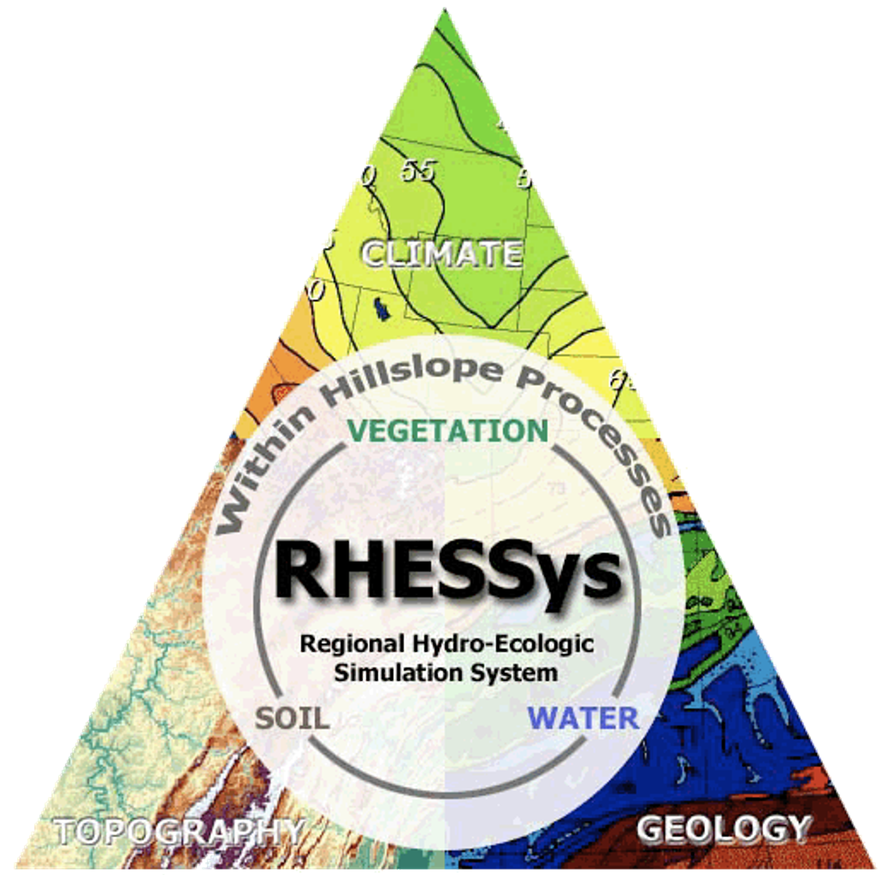

Ecohydrologic Modeling with RHESSys

Warning! This book is currently under development. Errors, inaccuracies, and garbled phrasing abound. That said, just as some models are useful, this incomplete book may also be useful. So enjoy!
Welcome
This is the online home for the book “Ecohydrological Modeling with RHESSys”.
Ecohydrology is the study of the connections and feedbacks between hydrological, ecological, and related systems. These systems are highly interconnected, such that changes to one system often affects the other systems. For example, increases in forest biomass due to fire suppression can alter forest transpiration and subsequently affect streamflow and water supplies to cities and agriculture. Due to the complexity of these integrative systems, many research questions are inadequately answered when simply addressing one system or another. Instead, an ecohydrological perspective is often necessary.
Ecohydologic modeling is the use of integrative tools to make projections about how hydrological and ecological systems will respond to distruptions such as land cover change or climate change. While ecohydologic modeling is often more complex than stand-alone hydrological and ecological modeling, this increase in complexity can be compensated by novel and emergent behaviors that would not be identifiable in non-integrative models.
This book will teach you how to model using RHESSys, the Regional Hydro-Ecologic Simulation System. RHESSys is a well-established ecohydrological model that couples water, carbon, and nitrogen processes. RHESSys has been used in numerous studies to examine processes such streamflow change, carbon sequestration, urban hydrology, water quality, forest mortality, vegetation phenology, wildfire, and more. If you think that RHESSys may be right for your research, we hope this book eases the process of getting the model set up and running, so you can spend more time conducting your simulations and analyzing your results.
What to expect from this book
“Ecohydrological Modeling with RHESSys” is designed to help you get started with RHESSys. Using the example dataset, this book will walk you through all the basic steps needed to install, setup, and run simulations with RHESSys. We also include explanations for some of the commonly-used advanced features within RHESSys, such as manipulating vegetation and running simulations with the fire model.
That said, this book is not meant to be a definitive guide for all things that can be done in RHESSys. For functionality beyond what is contained in this book, please refer to the RHESSys Wiki. This book is also not intended to provide the underlying theory of the model, as this is beyond the book’s scope. For more details about the science behind RHESSys, see the recommended RHESSys reading.
This book is primarily about interfacing with RHESSys. The direct way to interface with the model is via the command line and through a number of RHESSys-specific files that get passed to the model. However, as operating via the command line can be burdensome for repeated tasks, and assembling the RHESSys-specific files can be very time-consuming, a number of interface programs have been developed over the years to ease set up and operation of the model. In this book we will emphasize a set of interface programs written in the R programming language, as these interface programs are the best maintained and provide the most functionality for RHESSys. When appropriate, we will discuss how to interface directly with the model via the command line, as this can be useful at times.